UX Assessment Tool
A tool that turns heuristic evaluation from a blank-page exercise into a guided workflow - domain-aware questions, severity scoring, and an auto-generated report, all in one place.
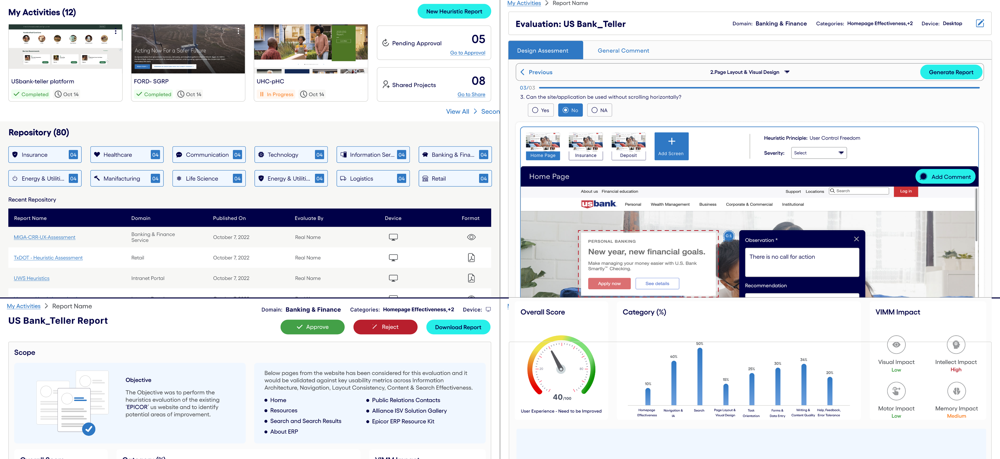
Overview
A guided workflow, in place of a blank checklist
What the tool does
- Walks an evaluator through a domain-aware set of heuristic questions, page by page
- Captures severity and an observation/recommendation directly on the screenshot in question
- Won't let a category close out until every question in it has an answer
- Generates a shareable report automatically - score, category breakdown, and VIMM impact
What this case study covers
- The two evaluator profiles the workflow was designed around
- How the guided evaluation and reporting logic actually works
- The wireframe-to-visual-design path, and the style guide built to keep it consistent
- Usability testing results and an A/B round on the home screen
Most heuristic evaluations start from a blank spreadsheet - a senior reviewer's checklist, rebuilt from memory every time, on whatever site or app is in front of them. This tool replaces that with something structured and repeatable: pick a domain, work through a guided set of expert questions per page, mark severity and observations on the screen as you go, and get a client-ready report out the other end - no separate write-up pass required.
The Problem
Every evaluation started from zero
No domain-specific guidance
Generic heuristic checklists don't know the difference between a banking site and an intranet portal - evaluators fell back on broad best practices instead of the questions that actually mattered for that domain.
Findings scattered across tools
Screenshots in one place, notes in a doc, severity ratings in someone's head - there was no single place to mark an observation directly on the screen and carry it straight through to a report.
Reporting was the real bottleneck
Turning a completed evaluation into something a stakeholder could actually read meant hours of manually building charts and formatting a deck - after the evaluation work itself was already done.
Research
Two evaluator profiles, at opposite ends of experience
Remote interviews with practitioners at different experience levels surfaced two clear profiles to design the workflow around.
Arjun
Junior Designer · Age 25
New to UX evaluation and short on a senior reviewer's instinct for what to look for. Wants a tool that supplies the expert questions he doesn't yet know to ask, instead of handing him a blank checklist.
Priya
UX Researcher · Age 30
Runs heuristic evaluations often enough that the workflow itself has become the slow part. Wants to capture findings once, on the screen, and get a client-ready report out without a separate reporting pass.
How It Works
A path that won't let you skip a step
Answer, or flag a screen
Each question gets a Yes / No / NA. A "No" is where the real work happens - everything else just moves to the next question.
Mark it on the screen
A "No" opens the exact screen area for annotation: select a severity, mapped to a named heuristic principle (e.g. User Control & Freedom), and write the observation and recommendation directly against that screenshot.
Nothing skipped
A category won't close out until every question in it is answered, and a flagged issue can't be saved without a severity selected - the tool holds the evaluator to a complete pass before moving on.
One click to a report
Once every category is complete, Generate Report compiles the whole evaluation automatically - overall score, per-category breakdown, and VIMM impact - ready to send to a stakeholder.
A lighter-weight "General Comments" tab sits alongside the guided evaluation, for feedback that doesn't need a full heuristic pass: add the screens, write free-form comments, and generate the same report.
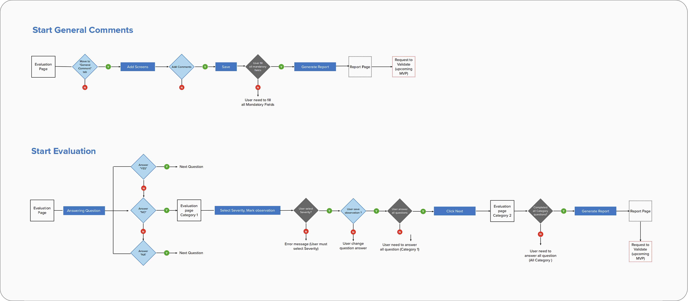
Wireframes
Low-fidelity first, to pressure-test the workflow
The activity dashboard, the guided evaluation screen, and the generated report - wireframed early to validate the structure before any visual design.
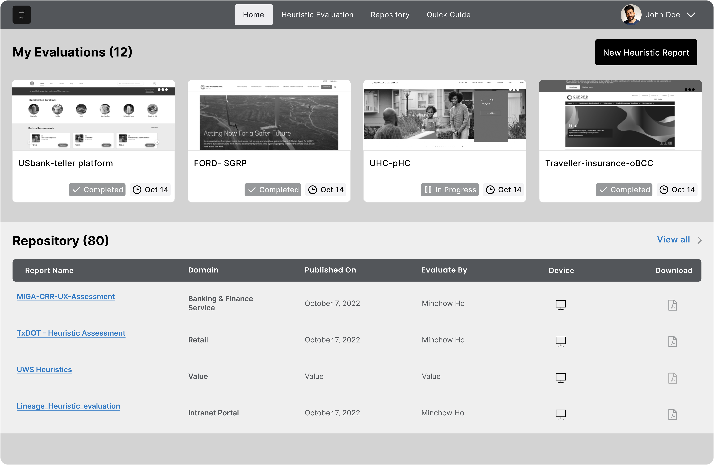
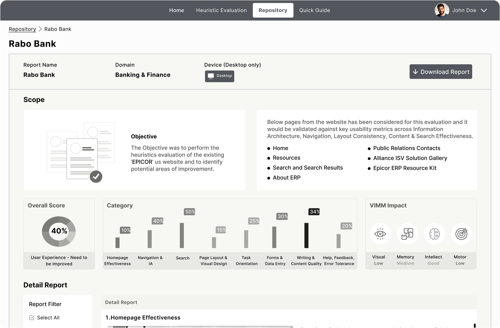
Usability Testing
Testing the guided workflow with real evaluators
18 practitioners worked through the same 7 core tasks - from creating a new evaluation through to finding and downloading the finished report - each rated on a four-point outcome scale (with ease, with difficulty, with help, failed), alongside a severity breakdown of every finding raised along the way.
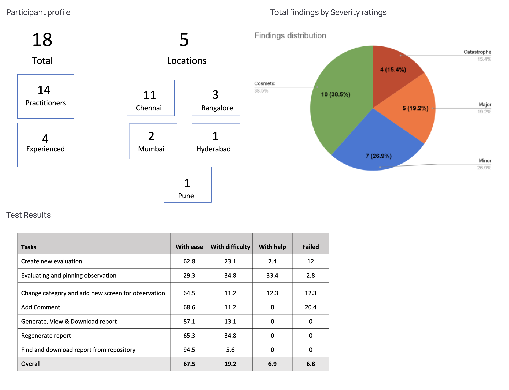
A/B Testing
Two directions for the home screen, tested side by side
Two variants of the My Activities home screen were put in front of evaluators to settle open layout questions before locking the visual design.
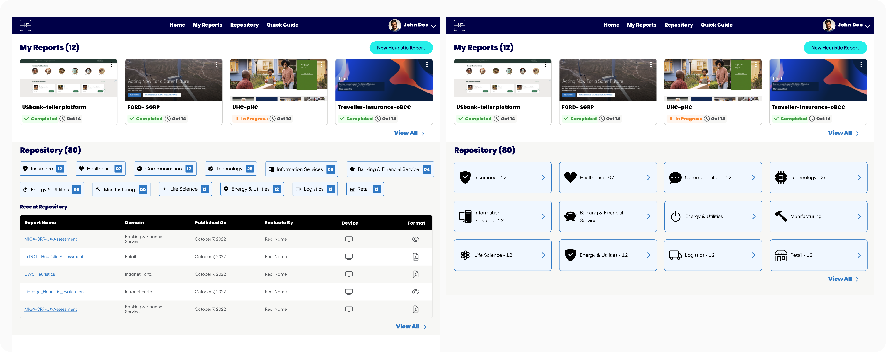
Visual Design
From wireframe to a finished, on-brand tool
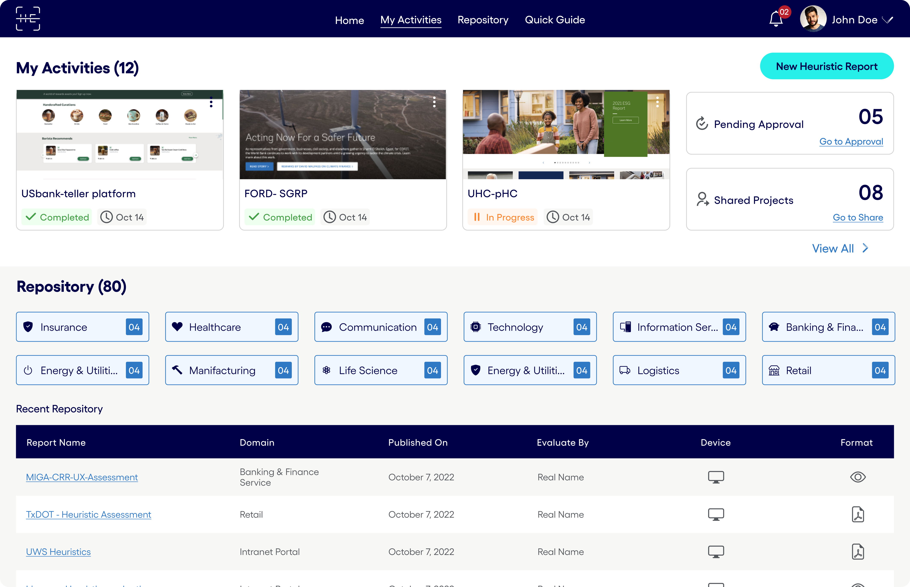
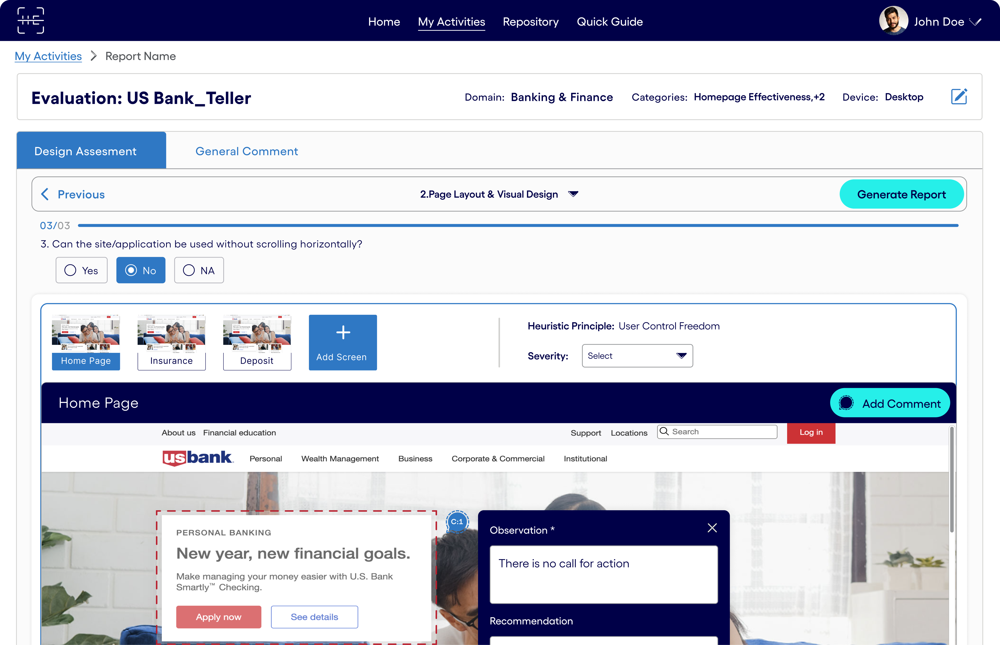
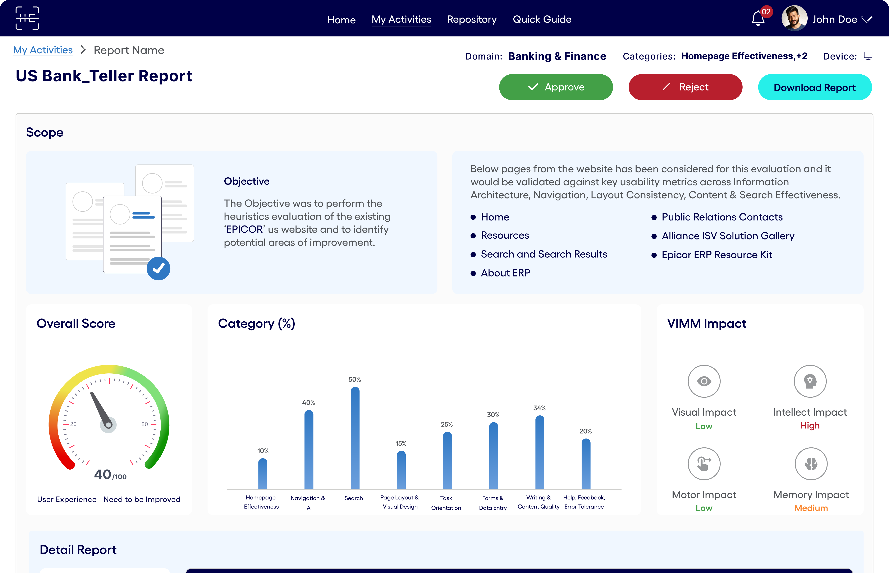
The report screen carries an Overall Score gauge, a per-category (%) breakdown across all 8 heuristic categories, and a VIMM Impact read-out - rating every finding's Visual, Intellect, Motor, and Memory load at a glance.
Style Guide
Built from a single base color, then documented as it grew
The project started with only one base color provided. Everything else - the Midnight Blue and white pairing, a teal accent system for calls to action, typography (Gellix, three heading weights), and every button, form control, and icon in the tool - was built out from there, then documented so the tool stayed heuristically consistent with itself.
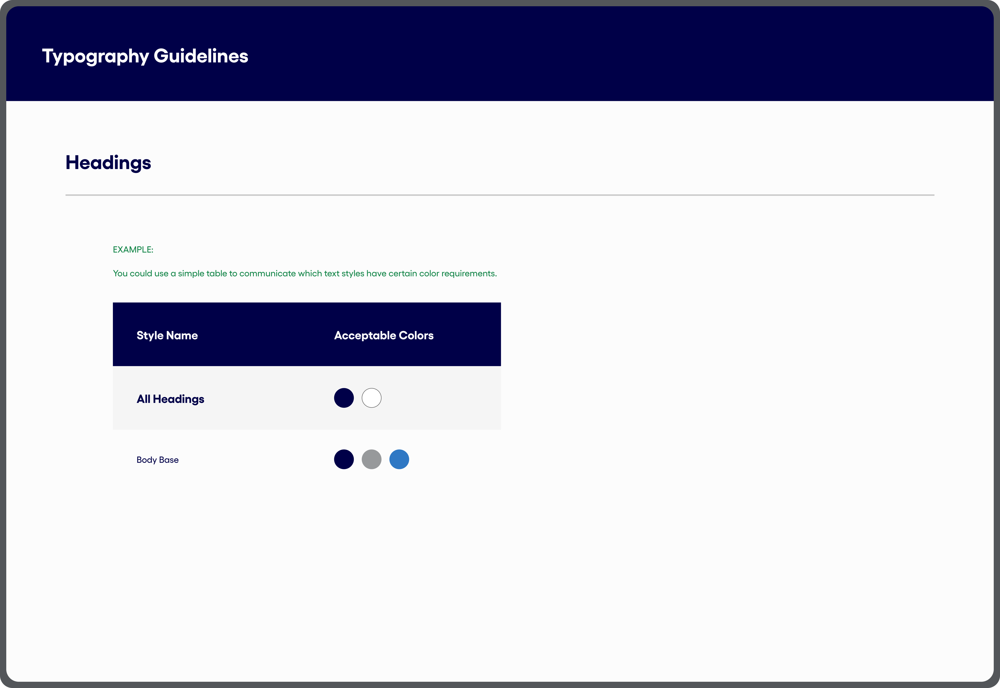
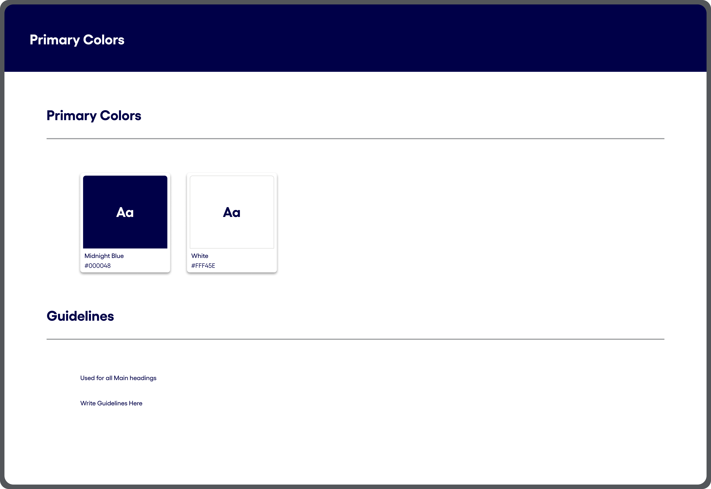
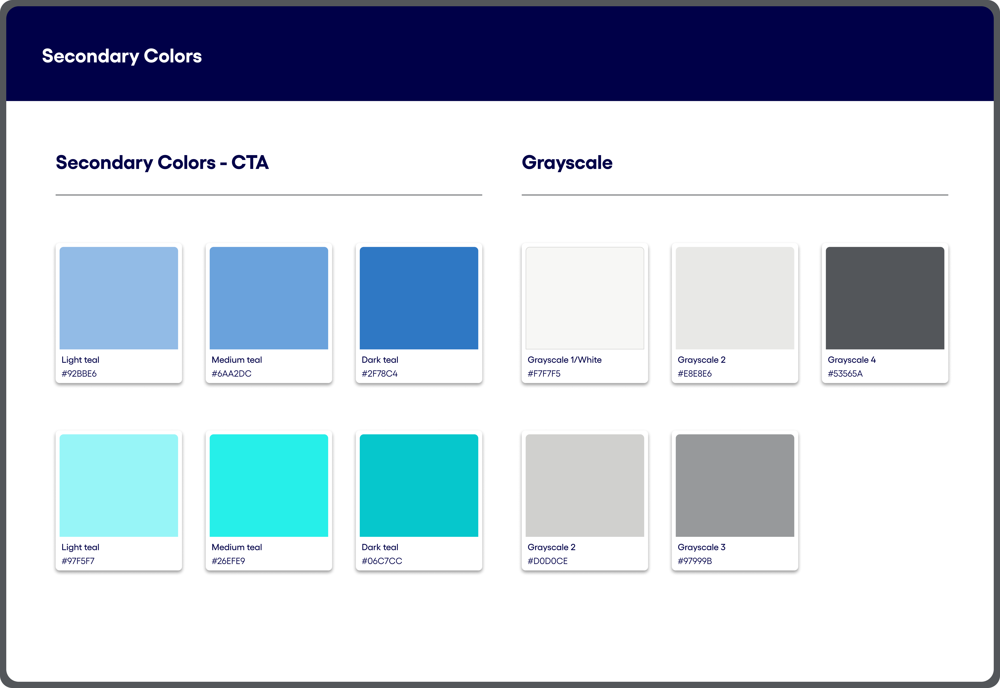
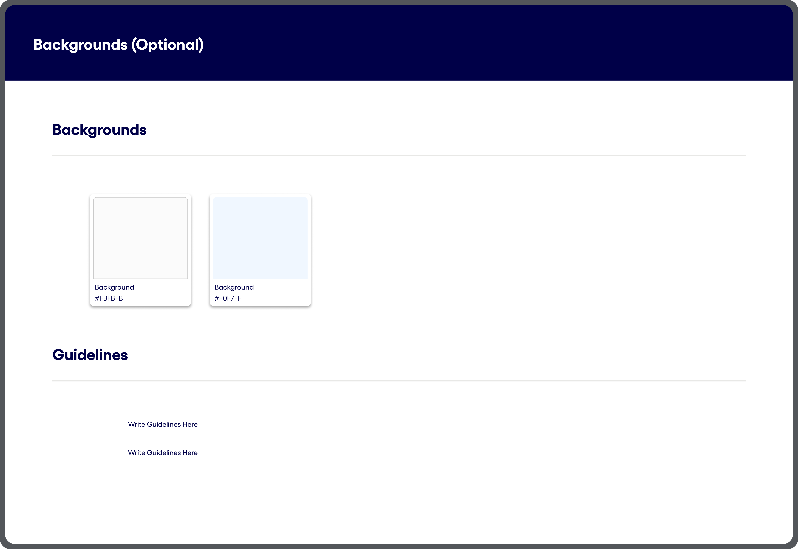
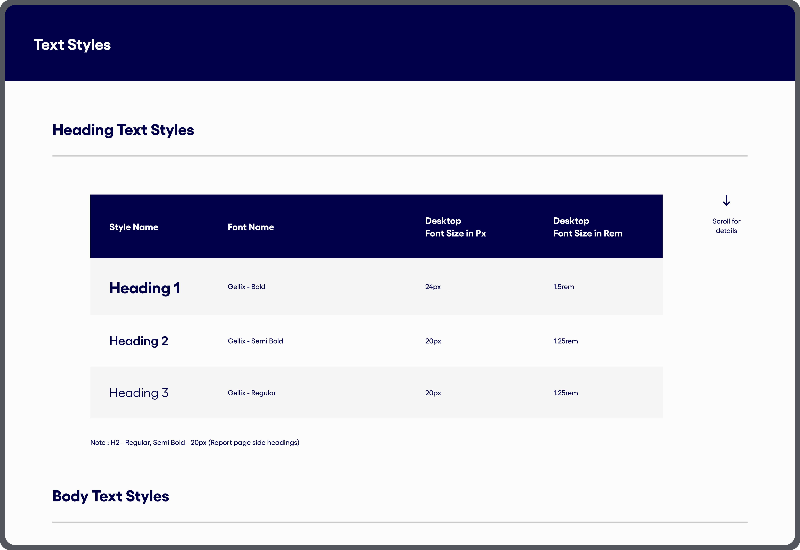
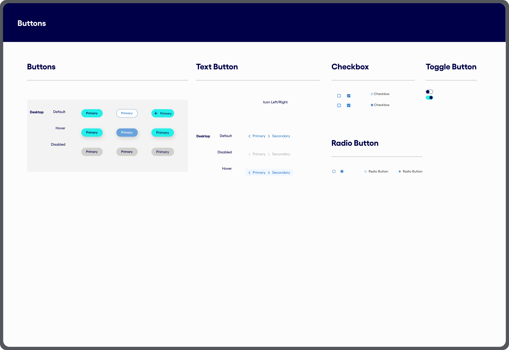
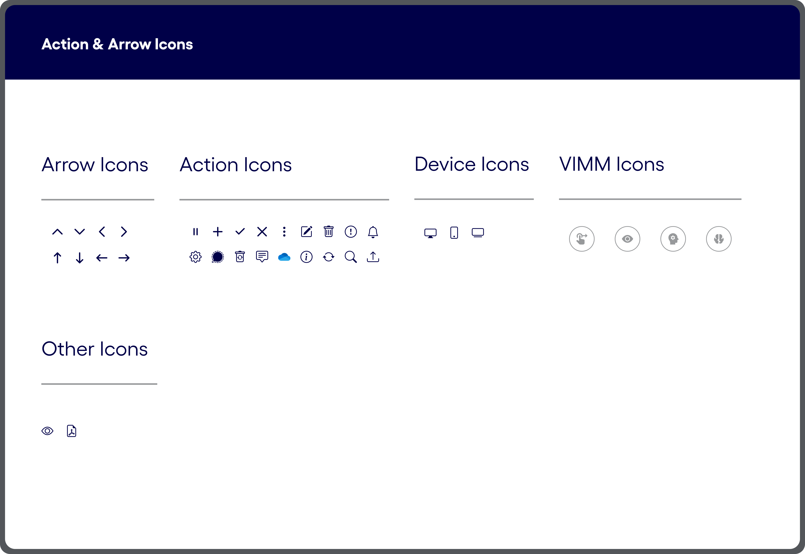
Reflection
What this project reinforced for me
01
Structure beats a blank page
Giving evaluators a guided question set, not a checklist, was what actually made unfamiliar domains approachable.
02
The report is part of the design
Deciding the output format - score, category chart, VIMM impact - early on shaped what the evaluation flow needed to capture, not the other way round.
03
A style guide pays for itself fast
Building the tool's own style guide early made every later screen faster to design, and kept the tool itself consistent with the heuristics it was built to check for.
Thank you
Happy to walk through the evaluation logic, the style guide, or any of the screens in more detail.
Reach out and I'll walk you through it.
Get in touch